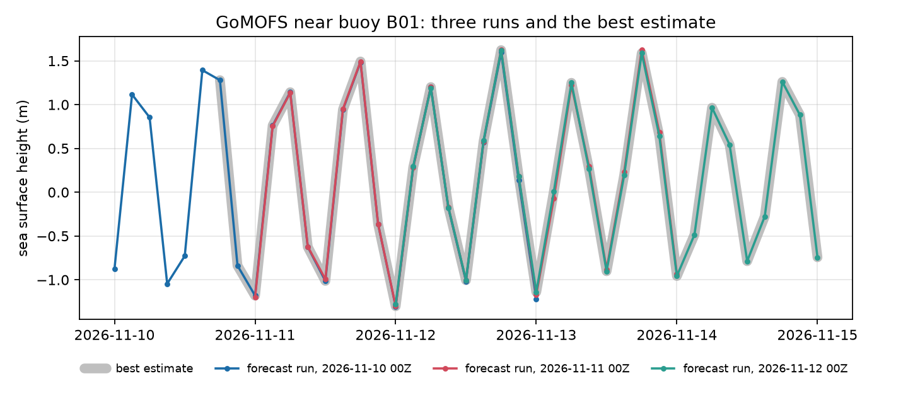

Virtual Icechunk · IOOS Hackathon 2026
Keep every run of a forecast model in one Icechunk store
If we have time and interest. Operational models write a new forecast run on a schedule. Each file is a time series of valid times: when the model says things will happen.
| Dimension | Meaning | Values |
|---|---|---|
time |
forecast reference time: when the run started | one per run, appended |
step |
lead time: hours after the run started | the same in every run |
(time, step, ...), with one chunk per runtime + step. It is computed when you read, never storedAppending a new run adds one entry along time. Nothing already in the store is rewritten.
3 runs: 10 to 12 November 2026, 00Z
75 NetCDF files, 55 GB, left in place
401 kB Icechunk store
NOAA’s Gulf of Maine model runs four times a day. Each run is 25 files: the nowcast valid at the run time, and a forecast every 3 hours out to 72 hours.
(time, step)# ds: the 25 files of one run, joined along the valid time (ocean_time)
ref = pd.Timestamp(cycle) # the run's reference time
valid = pd.DatetimeIndex(ds["ocean_time"].values)
ds = ds.rename_dims(ocean_time="step").drop_vars("ocean_time")
ds = ds.assign_coords(step=("step", (valid - ref).values)) # lead time
varying = [v for v in ds.data_vars if "step" in ds[v].dims]
static = ds.drop_vars(varying) # grid, mask, ...
ds = xr.merge([ds[varying].expand_dims(time=[np.datetime64(ref)]), static],
compat="override", combine_attrs="override")h and mask_rho, have no time. Add time only to variables that vary with step. Otherwise every run stores its own copy of the gridtime and step. Left to xarray, they depend on each run’s own values, and a run appended later can decode to the wrong datestep is one shared dimension. Check the lead times match before combining, with a clear errordef commit_cycle(repo, cycle, ds, append):
session = repo.writable_session("main")
if append:
ds_time = ds.drop_vars([v for v in ds.variables if "time" not in ds[v].dims])
ds_time.vz.to_icechunk(session.store, append_dim="time")
else:
ds.vz.to_icechunk(session.store)
session.commit(f"GoMOFS cycle {cycle:%Y-%m-%d %Hz}")
commit_cycle(repo, first, one_cycle, append=False) # create
commit_cycle(repo, second, open_cycle(second, cycles[second]), append=True) # appendds = xr.open_zarr(repo.readonly_session("main").store, consolidated=False, chunks={})
set_repo = set(pd.to_datetime(ds.time.values).strftime("%Y%m%d")) # runs in the store
new = sorted(set_cloud - set_repo) # only in the buckettime order, so sort the new runs firstimport rolodex.forecast
from rolodex.forecast import BestEstimate, ForecastIndex
ds.coords["valid_time"] = rolodex.forecast.create_lazy_valid_time_variable(
reference_time=ds.time, period=ds.step) # time + step
fmrc = ds.drop_indexes(["time", "step"]).set_xindex(
["time", "step", "valid_time"], ForecastIndex)
best = fmrc.sel(valid_time=BestEstimate(offset=6)) # newest run for every hour
Sea surface height near NERACOOS buoy B01 from three GoMOFS runs (colored lines) and the best estimate (grey band), which uses the newest run for every hour.
Build the store from NOAA’s GoMOFS files →
Run the second notebook on the same machine and in the same folder, because it reads the store the first one writes. The first takes about four minutes.
⌂ Home · Bonus: forecast model run collections